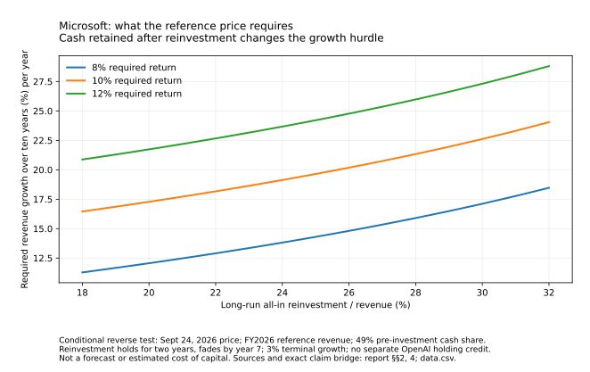

Is AI a Bubble?
Investment returns
Useful output must earn back capital. Investors must also earn back the price they paid for ownership.
Recovering the original investment and earning a return at today’s ownership price are different tests. The first includes the full historical capital. The second values remaining cash and obligations across the whole claim. Neither gets a free terminal asset or free funding.
A valuable project is not the whole share price
The IREN ownership test pairs the $46.15 September 24 price with 394.058648m August 14 shares: $18.186bn common equity. Adding June debt face and finance leases, and deducting unrestricted cash once, yields a $20.218bn operating-value requirement. This is a mixed-date diagnostic, not an exact September enterprise value.
Conditional ownership test · not appraised asset values
One contract does not explain the whole share price
On a narrow screen, scroll the figure horizontally.
A $1bn post-statement payment for already-budgeted construction reduces both cash and remaining cost by $1bn; it is not new equity upside while retaining old cash. An undrawn loan becomes cash plus debt when drawn. Prior costs and funding must not appear twice. June borrower accounts, distributions and remaining spending.
The favorable optional second cycle costs $4.3bn to renew and has no value after five further years. A negative incremental cycle can be declined where no obligation forces it. This differs from the earlier full-budget recovery test below: its $2.81bn/$3.42bn continuation requirements remain requirements, not assets to add to today’s value.
The equipment can pay back before the whole investment does
A disclosed IREN–Microsoft case now gives the recovery test a clearer capital boundary. The original Childress plan budgeted $5.8bn for equipment and ancillaries plus $2.8–3.2bn for 200 MW IT of facilities. Its approximately 85% project EBITDA estimate includes direct power, repairs, maintenance and site costs, but is not complete owner free cash flow. Budgets and margins remain company estimates. Original cost perimeter and source notes.
Cost perimeter · not an actual return
One project. Two cost boundaries.
On a narrow screen, scroll the figure horizontally.
The model synchronizes four phases into 60 equal service months, places capital and the contractual advance at the modeled start, and credits that advance against months 25–60. It conserves the $9.664199424bn tranche-fee total. Actual payment dates, calendar-hour billing, taxes and as-built costs are not observed; this is not a realized project IRR.
| Capital / cash-cost case | First-term NPV before end value | Net value required at year five |
|---|---|---|
| $5.8bn equipment only / 85% project measure | +$1.258bn | None within this restricted perimeter |
| $8.8bn combined midpoint / 85% project measure | −$1.742bn | $2.806bn |
| $8.8bn combined midpoint / 80% cash sensitivity | −$2.125bn | $3.423bn |
| $8.8bn combined midpoint / 75% cash sensitivity | −$2.508bn | $4.039bn |
The 80% and 75% cases add five or ten percentage points of costs outside the project measure, applied to original fees. Those are sensitivities, not measured company margins. Routine power and maintenance are already included and are not deducted twice. Net end value means sale proceeds after transition/realization costs, or the equivalent value of continuing operations, before allocating between creditors and equity. The model does not sell the assets and then reuse them.
The result does not say the site is worthless or already impaired. It says that a continuing asset must do additional economic work before the whole initial investment clears the stipulated hurdle. The equipment-only cash payback in month 31 omits the facility; it is also not the company’s approximately two-year claim for a different set of newer three-year contracts. Complete assumptions, sensitivity figure and reproducible calculation →
The earlier general recovery illustration remains a different test
The following $14.117bn example explains how life, timing and cash margins affect recovery. It remains useful, but it is not the newly documented IREN cost perimeter or an actual CoreWeave cohort valuation.
A gross margin deducts some direct costs. Operating profit includes more expenses and accounting depreciation. Operating cash flow adjusts noncash items and working capital but does not deduct all investment. None alone tells us whether a particular investment has recovered its capital and earned a return for the risk taken.
The whole-system assessment uses $14.117bn—CoreWeave’s disclosed first-half cash-investment scale—to illustrate an investment cohort. It does not assert that all of that mixed spending entered service together or that it describes a new GPU-only fleet. The public evidence does not supply the cohort-specific prices, utilization, maintenance and asset mix needed to underwrite the actual investment. Disclosed investment input.
Conditional scenario · not company targets
A longer earning life lowers the annual revenue hurdle
Scroll the figure sideways to see the full diagram.
At four operating years and an assumed 50% complete pre-financing cash margin, the required level annual revenue is $8.907bn. Approximately $4.454bn of annual cash then has a present value equal to the $14.117bn investment at a 10% hurdle. This is a conditional break-even calculation including return on capital, not simply cost divided by years.
The margin means cash after operating costs, tax and maintenance, before financing payments. It is not the reported EBITDA margin. Interest is not deducted a second time when the discount rate already represents the all-capital hurdle. New investment needed after the chosen earning life is not supplied free by the model.
Price, cost, delay and useful life decide the outcome
| Assumptions | Required revenue |
|---|---|
| 4 years; 40% cash margin | 11.134bn per year |
| 4 years; 50% cash margin | 8.907bn per year |
| 4 years; 60% cash margin | 7.423bn per year |
| 4 operating years; 50%; receipts delayed one year | 9.798bn per operating year |
| 4 years; 50%; revenue falls 10% each year | 10.232bn in the first year |
| 4 years; 50%; revenue falls 20% each year | 11.760bn in the first year |
These are different scenarios, not a measured revenue shortfall. Delay also can create construction overruns, financing needs or loss of competitive earning time that this simple calculation does not include. A longer building life cannot be assumed to extend an accelerator’s useful earning life. Assumptions, complete table and reproducible equations.
The demand study adds a cost-sensitive test. With revenue normalized to 100, assumed variable cash costs of 35 and fixed costs of 15, cash is 50. A 20% price cut and 25% volume increase restore revenue to 100, but variable costs rise to 43.75 and cash falls to 41.25. At the inherited four-year investment scale, the scenario has a −$2.470bn net present value. It is not an actual project loss.
A 20% fall in unit variable costs restores that cash. Without the cost improvement, the assumed structure needs 44.4% more volume—not 25%—to restore original cash. Extra work must fit available capacity; expansion capital is not included. The stress is not calibrated to a mix-sensitive token-price series. See the revenue-versus-cash visual and complete sensitivity table.
Cheaper service can help buyers without rescuing every supplier
Lower unit costs can make more useful tasks worth buying. Competition can also pass savings to customers, and customers can change their model mix or supplier without stopping AI use. The crucial conjunction is adequate paid volume, attainable prices, controlled all-in costs and sufficient duration. More use by itself is not enough.
The office buyer example shows that a moderate license cost can be justified by a fraction of saved-time value. The support example shows that a billable outcome need not eliminate an equivalent human expense. Good customer economics support willingness to pay; they do not allocate every dollar of customer surplus to the model or infrastructure provider. Office buyer hurdle; support buyer hurdle.
Power and delivery matter to that duration. The IEA’s April 2026 outlook estimated global data-center electricity use at 485 TWh in 2025 and projected 950 TWh in 2030. A forecast of energy demand is not delivered capacity or cash available for a particular project. Grid and construction constraints can restrain excess capacity while also delaying receipts. IEA scope and forecast.
Retail pricing does not automatically reprice a fixed cloud contract. A price decline may first reduce the contracted buyer’s margin rather than the infrastructure lender’s current receipts. The ability and obligation to keep paying—and the provider’s delivery performance—then matter. CoreWeave also reported higher annualized capacity pricing on short three-to-six-month contracts; that issuer claim cannot be extended across an entire fleet or asset life. Dated short-contract statement; contrasting contract horizons.
Creditors can be paid while the original investment disappoints
A negative investment net present value is not a dollar estimate of lender loss. An all-capital recovery model asks whether cash compensates for the full investment and required return. A debt-payment test asks whether the particular borrower pays the particular obligations on their dates. The financing structure decides which claim absorbs the difference.
DDTL 4.0 makes this distinction concrete. DBRS identifies Meta’s take-or-pay contract and expects it to fund full amortization without refinancing. Meta may honor reserved-capacity payments even with disappointing utilization; the operator may pay lenders but retain a thin equity residual. A project rating therefore does not certify Meta’s AI investment return, the operator’s equity return, or an attractive share price. The rating is also a projection, not current compliance.
Sources: Morningstar DBRS initial credit analysis; DDTL 4.0 executed credit agreement.
Liquidation is a backup case, not that expected repayment route. Against $2.837bn of June principal and approximately $3.3bn of noncurrent book collateral, assumed 5% realization costs imply required gross realizations of about 85.6% of book if all $155m of current collateral is recovered as cash, or 90.5% with none. Those cash outcomes and costs are assumptions, with prior-ranking and competing swap claims set to zero. They are not expected losses or market prices.
The threshold changes with principal amortization, drawings, depreciation, transfer costs, reserves consumed and claim priority. It does not value collateral at final maturity and must not be substituted for the $14.117bn hypothetical cohort used above. The collection, reserve and enforcement calculations keep those two models separate.
Time, replacement and a usable second life decide the remaining recovery
The service contract preserves aggregate fees by extending service end dates after a delayed start. The timing test therefore shifts all 60 service months: at the $8.8bn midpoint and 85% project measure, a twelve-month delay raises required net value from $2.806bn at year five to $3.912bn at year six. If the advance is delayed too, the requirement rises to $4.224bn. These are assumed timing cases before extra construction, idle-equipment, penalty or financing costs—not findings of a contractual breach. The extended-term timeline.
Another route is to keep the facility and buy a new equipment generation. The finite second-cycle case charges $5.8bn for replacement equipment plus $0.2bn for retrofit at year five, then five years of operations with no final sale value or new customer advance. Its $20m per IT MW-year price scale comes from a dated claim about different, newer contracts; using it five years later is explicitly an assumption, not a forecast.
With assumed full-use annual variable costs of $1bn, fixed costs of $0.2bn and an 80%-cash first term, 90% paid utilization at that price produces +$0.299bn whole ten-year NPV. At 65% paid utilization and a 20% lower price it produces −$2.825bn, despite still generating $1.23bn of annual operating cash. Both use a 10% hurdle.
At the selected unchanged price/cost scale the whole investment breaks even at 85.95% paid utilization. With a 20% price reduction and unchanged unit costs it would require 117.21%, beyond the fixed cohort’s capacity. Efficiency, cheaper replacement or a better service mix can change that boundary; unbounded extra volume cannot be assumed. Follow the replacement arithmetic and limits →
Facility-only continuation is a different business. The required fifteen-year net annual facility cash is about $353m in the 85% first-term case or $431m in the 80% case, with no extra initial tail capital. Those are reverse tests, not observed rents. Core Scientific’s gross billing-MW revenue cannot be used as a matched net IT-MW rent for Childress. Why the hosting comparison cannot supply an appraisal.
Microsoft: required revenue growth, not cash growth
The updated test separates revenue, pre-investment cash capture and economic reinvestment. Fiscal 2026 operating cash, less a stock-compensation allowance and a net-interest/tax adjustment, gives a $170.328bn pre-investment proxy. Charging $115.948bn cash investment and $24.608bn new finance-lease assets leaves $29.772bn. That is an analytical economic residual, not reported free cash flow. Exact cash and financial-claim bridge.
New leased assets count as investment and existing lease liabilities enter the claim bridge. Lease principal is not deducted again from this all-capital model. Stock compensation is charged once, not a second time through the same assumed dilution.
At the $497.93 September 24 price, paired with the July 23 share count, the model assumes 49% pre-investment cash share. Investment remains at 42.36% of revenue for two years, then fades to 20%, 25% or 30% by year seven and continues. It includes a separate $1.1bn commitment and 3% terminal cash growth.
| Required return | 20% long-run investment | 25% | 30% |
|---|---|---|---|
| 8% | 12.06% | 14.30% | 17.11% |
| 10% | 17.28% | 19.64% | 22.61% |
| 12% | 21.74% | 24.21% | 27.31% |
Conditional reverse valuation · not a forecast
Persistent reinvestment raises the required revenue growth
On a narrow screen, scroll the figure horizontally.

The central case has 72.9% of value after year ten. Giving no value after year twenty raises the required first-decade growth to 26.22%. This quantifies tail dependence, not an expected shutdown. A favorable persistent-growth/capital-normalization path can support the reference price; weaker growth plus sustained heavy investment can fall well short. Favorable and adverse cases, holding credits and limitations.
The 18 September foundation retains its separate feed-only reference and cash-residual growth illustration. Its 21.51% central cash-growth result is not a revenue-growth forecast and cannot be compared directly with the new 19.64% requirement as evidence of repricing.
Private ownership must fund the intervening business
The March OpenAI $852bn and May Anthropic $965bn post-money references are dated financing values, not September common-equity prices. The reported OpenAI 2026–30 cash-burn forecast is not a current financing hole obtained by subtracting announced commitments. Private rights and complete cash balances remain incompletely disclosed. Source and ownership boundaries.
For OpenAI, no distributions for five years plus an assumed additional $100bn pro-rata call in year three, at a 10% return and 3% later cash growth, requires $104.5bn annual owner cash beginning in year six. That means $348.4bn revenue at an assumed complete 30% cash margin, or $522.6bn at 20%. At a 15% hurdle the same call requires $221.5bn owner cash. The cash margins, funding and dates are scenarios, not company targets.
Delaying distribution, limiting the cash stream to fifteen years or issuing discounted new claims raises the requirement. A holder who does not contribute receives a smaller fraction instead; the model does not charge both participation cash and nonparticipation dilution for one raise. The earlier ten-year/no-interim-funding illustration remains dated in the foundation, not the current comprehensive test. Full funding, delay, finite-life and dilution calculations.
An offering changes funding—not the underlying return
Offering mechanics · no assumed amounts
“Money raised” can go to different recipients
Scroll the figure sideways to see the full diagram.
A later current report confirms $4.2bn of CoreWeave notes issued on 22 September 2026, including the exercised $0.5bn option. About $4.137bn net of purchaser discounts, less $566.2m capped-call cost, leaves $3.5708bn before other expenses. This is completed financing, not operating revenue or a complete September cash balance. The September 20 investigation correctly left the then-expected closing prospective. Closing disclosure.
CoreWeave’s closing demonstrates access to capital while adding debt, coupon and conversion exposure. About 42.92m shares is a hypothetical full-share conversion at initial terms, not shares already issued. A closed financing still does not establish the return earned on what it funds.
OpenAI and Anthropic confidential submissions and reported proposals are not priced or closed IPOs. September 25 reporting says SB Energy postponed formal marketing; no company-confirmed withdrawal or insolvency follows. The separate NVIDIA subscription still needs qualifying primary proceeds and closing; secondary exits do not meet the issuer-capital condition. All dated transaction stages and separate NVIDIA instruments.
What would make the return case stronger?
Ownership-specific evidence now matters alongside project recovery: actual remaining construction, net portfolio cash, Microsoft’s complete investment intensity, private funding and preference rights, and net primary proceeds. Current valuation tests and their ambiguities.
The decisive evidence is realized cash from identifiable delivered investments: service prices and paid utilization, complete operating costs, maintenance and replacement needs, productive life and actual amortization. A backlog helps only to the extent delivery occurs and the counterparty can pay. Investor pricing then needs a separate test against that cash and dilution.
Customer demand makes that outcome plausible in important settings. It has not established the assumed 50% cash margin or a four- to six-year cash stream for the investment cohort. Evidence that would strengthen or weaken the answer →
The next useful recovery evidence is net transferable service and equipment value: power and lease rights, assignment, downtime, replacement cost and the time needed to redeploy. Better evidence could support the favorable amortization case or reveal a weak enforcement backup. A chosen recovery percentage alone is not a finding. What remains unmeasured.
The new case narrows the missing inputs: final Horizon costs and dated payments; acceptance, credits and collections for all phases; complete cash operating costs; net values of transferable sites or clusters; and actual replacement-generation economics. None of those quantities is established by a reported short-term capacity price. Cohort-specific revision tests.